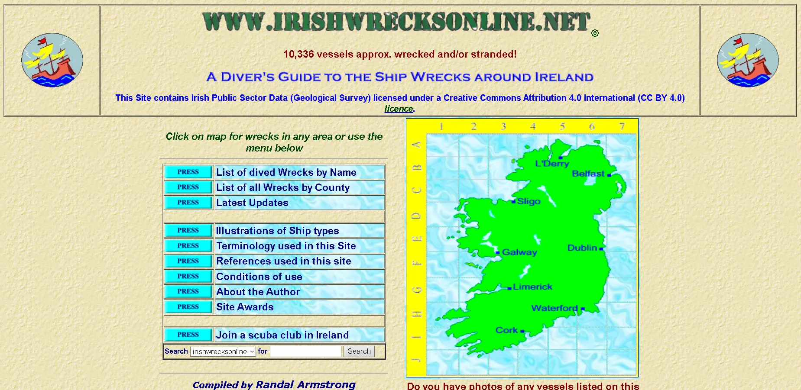

.webp)
As part of a module, Web Application Development at the Namibia University of Science and Technology (NUST), I undertook a redesign assignment focused on improving the home page of Irish Wrecks Online, a website dedicated to providing information on wrecks and maritime history. The objective was to transform the poorly designed and outdated website into a modern and user-friendly interface. The redesign was developed using HTML and CSS.
Original Website: http://www.irishwrecksonline.net
Screenshot of the Original Website: 
By implementing these improvements, I aimed to transform the Irish Wrecks Online home page into an aesthetically pleasing, user-friendly, and engaging platform for users interested in exploring wrecks and maritime history.
Looking back at the project, I acknowledge some areas for improvement. In retrospect, I realize that I missed the opportunity to include the website's logo, which is a crucial element for brand identity. Additionally, I should have prioritized making the website fully responsive to ensure a seamless experience across all devices.
These realizations serve as valuable lessons for future projects, emphasizing the importance of comprehensive planning and consideration of essential elements from the outset.